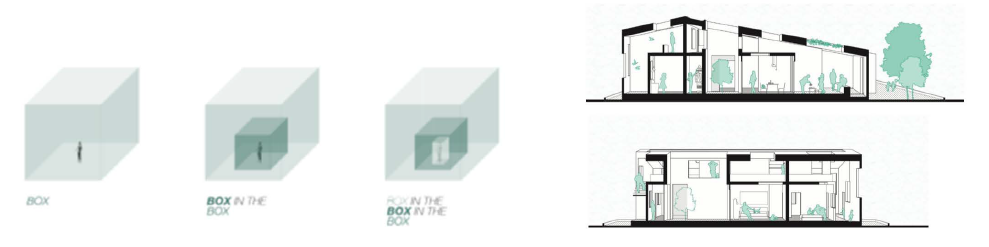
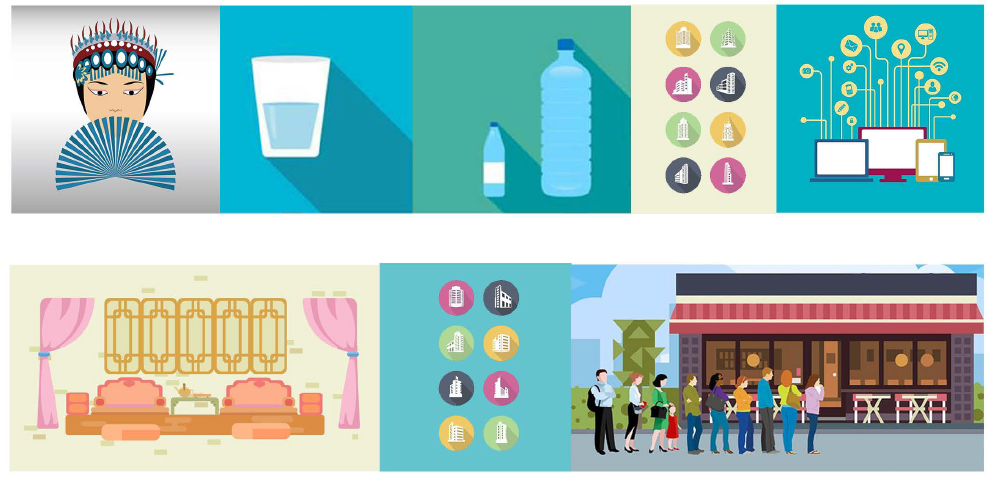
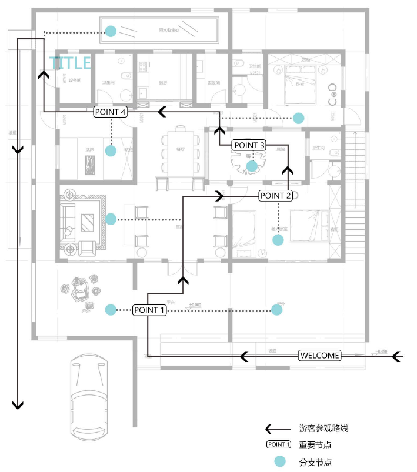

INTRODUCTION
The population in China is constantly on an upward trend, and to keep up with that
trend it is time to start investing in building and improving rural communities. The
package of initiatives to refocus development in rural areas was announced in early
2006 under the banner of 飞reating a new socialist countryside" [19]. This change
seemed to recognize both the importance of the countryside and rural areas to complement
the urban development that was taking place and to recognize that not every
citizen would live in cities. These policies and advice could be focused on the future environmental
sustainability of villages and act to support the long-term self-reliance and
self-support mechanisms that are more appropriate. Along with rural development
issues the Chinese elderly community is struggling. The one-child policy has created a
large age gap that has left many senior citizens alone, in improper living conditions, or
without housing opportunities at al l.
The development and success of rural areas is needed on a national level, to not only
sustain current areas but to also support neighboring urban areas. In China a majority
of parents work in the city while the elderly watches their grandchildren. Urban areas
are so congested that city living is overly expensive, which leave the elderly in poor
living conditions or even homeless.
According to the United Nations, China is ageing more rapidly than almost any country
in recent history. China' s dependency ratio for retirees could rise as high as 44% by
2050. The dependency ratio compares the difference between those
not in the labor force with those who are working, or can work full-time. Urbanization
in China is happening very quickly leaving a large elderly housing problem. In turn we
comprised a plan to build affordable communities outside of city and suburb areas to
create peaceful, comfortable, and sustainable green communities for them. For many
older couples, the leisurely and peaceful life is more aUractive than the noisy and fast
paced city life.
COMMUNICATIONS STRATEGY
Website - the contents of the website are a comprehensive record of our activities and
accomplishments since our entry into the decathlon as well as information about our
teams collaborating schools, team members, and sponsors.
Audio Visuals - A detailed virtual 3D tour of our team' s house design with a descriptive
voiceover, along with videos promoting our team and design concepts.
Social Media- WeChat and Facebook accounts help us reach people all over the world
to showcase all the hard work that has been put into our house design. Social media
platforms have played a significant role in publicity for our team.
NewsleUers- Monthly reports on progress
Public Exhibits - Informational signage along with self and group guided tours
ELECTRONIC COMMUNICATIONS
Team website
Our website www.xjtu-wne.club/index.htmlis the official platform where we share important
information pertaining our involvement in the Solar Decathlon China 2018.
Our website has 7 sections that are easily navigable for visitors including;competition
overview,team introduction,design introduction,progress records,model displays,activity
photos,and audiovisual presentations.On average we have over 1000 visitors a
month on our page.The website introduces the competition and our design theme so
that visitors can have a basic understanding of our house in under 5 minutes.We also
provided a video to illustrate our designs in detai l.There is also a section were we documents
our team progress throughout this time leading up to the competition,this
sections shows students actively participating in discussion,design research while visiting
enterprises,model building,and many other activities.

Social media
Technology is the main form of communication and allow us to connect with people
from all over the world.ln order to develop a larger following and have a significant
presence in the online community we utilized various social medias.WeChat is one of
the main methods of communication in China as is Facebook for America.We utilized
these platforms to reach people from all over the globe.So far we have connected
with hundreds of followers and received thousands of views on our posts.
We created an online community around our project and connections with our partners
and sponsors.We publish project information and write posts so people can track
our progress from start to finish!Our publicity helps people get a good understanding
about solar houses and energy saving technologies.We also make post to spread
awareness about going green and living sustainable lifestyles.At the same time we interact
with our constituents as they interact with us so we can promote the project together!
Newsletter
Since the start of January 2017, we have produced a monthly summary report of our
progress.Our aim was to provide precise information about the project to our
schools,communities,and partners.Each report consists of several sections including;
the latest news,schedule follow-up,design progress,pictures, experiential knowledge
exchange,important dates,activities and more.ln doing sO,our readers remain
up to date with the projects progress.。

PUBLIC EXHIBIT MATERIALS
Team Logo
The logo is a combination of ideas that our design wants to convey. The design
philosophy combines a simplified outline of our home along with our house name
in both English and Chinese characters 11 归(~需)家11 and the colleges that make
up our team. We are an International team made up of 3 universities from 3 continents.
Xi' an Jiatong University of China, Western New England University of the
United States and Politech University of Milan Italy. The Chinese Name of our
house is called ll Gua Jia ll which means IIReturning Homell , The English name of
our house is the IITurtle Homell , which turtle has the same pronunciation in Chinese
as the character IIGuall
heaven, and represents longevity.
Informational Signage
The layout of our exhibition
boards is concise with the
theme prominently displayed.
AS it stands the spirit of the
competition is closely integrated
with the current trend of
national development going
green. The exhibition boards
will display our team introduction,
express our design
themes, and promote our
house description.。
Exhibit Swag
Along with informative signage, we put together
some creative marketing strategies.
To help keep visitors cool we will be handing
out circular fans that market our design concept
and are printed with a tour map of our
home. We will also be handing out personal
time capsules on the back of each fan so that
guests can write something they want to say
to friends or loved ones. We will collect all
the time capsules and return them back to
the visitors in 10 years. In Chinese traditional
culture it is believe that fallen leaves
return to the roots meaning to revert to
one' s origins. The design concept of II re -
turning homell is strengthened through the
form of the time capsules.
Project Highlights
1.) The design of the home consists of 3 components;
At the heart of the home lies the court yard, some of the many benefits of
this include increasing naturallighting, optimization of solar gains and more
cross-ventilation.
The inner shell that surrounds the courtyard is enclosed and entails all of the
homes living spaces. Even though it is closed off from the outdoor elements
there is still plenty of natural light as the house has many windows and an
open layout.
The last component is the outer shell which is open to the outside environment.
This shell includes and an area surrounding the house which provides
a cool and comfortable place for outdoor activities and a spacious second
floor which is designed to be a children' s play space.
2.) CL cast in place composite gypsum concrete will be used to construct the
frame of our house. There are many other advantages to using this material
such as; it is non-flammable, sound absorbing, bio-degradable, possesses
high mechanical strength and thermal mass, has high water and moisture
resistance, and is manufactured by an environmentally friendly process
3.) The smart home technology has 3 major design components. The first
being comfort and convenience. The second component is energy monitoring
and clean energy consumption distribution. The last component is elderly
safety and security for comfortable living.
to create a comfortable, quiet, and convenient green retirement community
for the elderly to provide for the elderly.

PUBLIC EXHIBIT PRESENTATION
Guide Tour
1.)The tour will route is split into stations so that guests are able to visit and learn about
all key elements of the Turtle Homes design. Each tour station will be clearly labeled and
contain visual media distinguishing them from each other. Along with signage each station
will contain a QR code for visitors to scan with their mobile phones to obtain a more
comprehensive description surrounding each station including innovations, materials,
sponsors and more.
2.)We will be distributing marketing swag such as brochures printed on fans to our
guests during the tours. This not only serves as a descriptive function but also provides
our visitors relief from the heat during the scorching summer season. To make the tour
more interesting visitors will have the opportunity to write messages and put them in our
time capsule.
3.)For the tour we will have interactive demonstrations for the visitors to participate in
have a hands-on experience. The interaction will include but are not limited to a cross
sectional area of our CL wall for visitors to understand our building materials, the use of
the QR code will also enter guests into our on-site lottery encouraging participation and
enhancing enthusiasm, Specific selfie areas and hashtags throughout the house that
highlight different amenities and give our guest another opportunity to enter the lottery,
and demonstrations that show the real time energy usage and consumption monitoring.
4.)When queuing to enter the house, we will provide guest with shading, water, and
small souvenirs to improve their visiting experience.

Tour route design
The design of the tour route is as long as possible and is connected in series so that visitors
can visit the home as fully as possible to get a comprehensive understanding of our house.
Taking the first floor as an example, we designed 4 important visiting sections, namely the
outdoor platform, elderly bedroom, courtyard, and traditional room. Each section represents
a highlighted feature of the home. During the tour, team members will be placed
at each highlighted area to provide a descriptive explanation for the visitors at that node.
We have taken initiative to plan for high traffic times. The 2 things taken into consideration
are as follows;
1.)High traffic was taken into consideration when planning the tour route to provide the
longest path. The width of the tour channel is relatively spacious, hands on demonstrations
will help alleviated over crowdedness by keeping visitors entertained allowing more time
for congestion to clear out.
2.)ln times of high traffic, we have
planned for time-scheduled appointments
and reservations for
groups to control the flow of
people in each time period, allowing
only a fixed number of visitors
to enter in each time period. Also,
the design and use of QR codes
allow us to also allow for independent
house tours without tour
guides needed. Appointments and
reservatinns will o_nly be_ imple.;;
mented in times of uncontrollable
Ri9 AIlr affi-t.

AU DIOVISUAL PRESENT ATION
AII the contents and ideas of architecture that we would like to convey to
the audience are divided into three parts of video.
Video 1
The first video' s main purpose is to show the overall architectural design
to the audience in a comprehensive and appealing way. The video provides
360-degree views of inside of the house and its individual rooms along with
outside and aerial views. The video gives the audience a good prospective
of the house making them feel like they are there without even stepping
inside. The audio voice over provides descriptive explanations of the houses
highlights and features relating them tour our target concepts, increasing
the effectiveness of the virtual experience.

Video 2
The second video introduces the team to the audience. It includes introductions
of the team members of Xi' an Jiao Tong University, Western New England
University, and Polytech University of Milan. The video also displays
all the cooperation and efforts of the team along with the step by step development
and progress of design ideas over the past 2 years. Lastly the
video describes the concept our house name and logo making connections
to our design concepts.

Video 3
The third video meant to be created during the Decathlon, aims to record
and display the construction process as the home is being built. The video
will show the audience the steps required and necessary to build the
home. It will also touch on any difficulties we experienced during construction,
along with our teamwork, cooperation and perseverance. The home is
a collaboration between 3 colleges from 3 continents and this video will
highlight our cooperation with each other as a team as well as our drive to
win while taking a large leap toward future sustainability and green engineenng.